Contactless ordering worked. Nothing around it did.
Grab launched Scan to Order (STO) so diners could browse, order and pay from a QR code on the table. It answered the need for contactless ordering, but adoption stayed low on both sides of the counter.
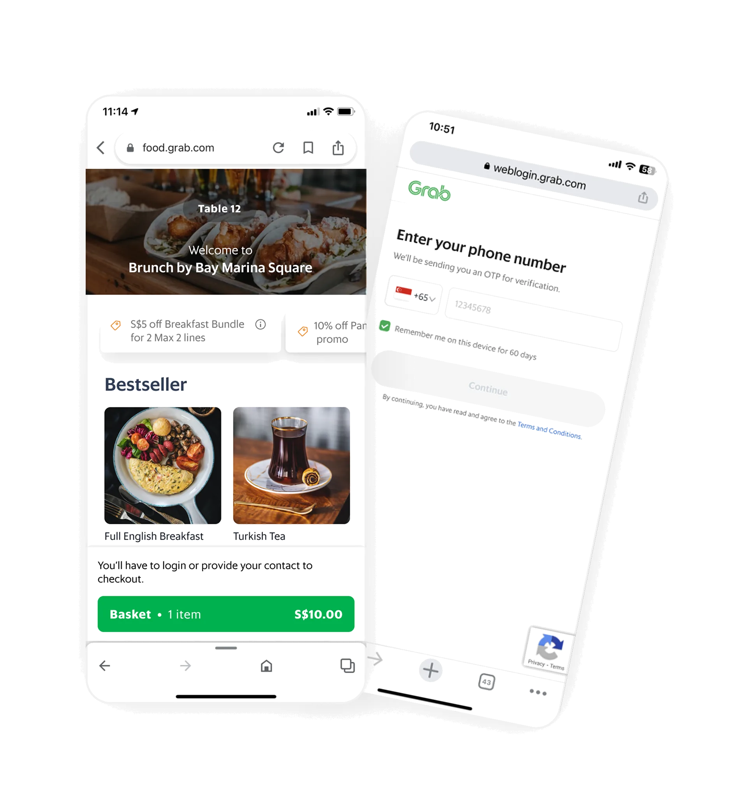
54% dropped at the login wall
Most abandoned orders ended at account verification, before anyone had looked at the menu properly.
Missing the basics
No takeaway option, no guest ordering, no localised payment methods. Competitors offered all three.
No POS integration
Cashiers re-entered every order by hand, which meant delays, errors and reconciliation at the end of the night.
No view of the table
Orders were scattered across invoices, so merchants couldn't track spend per table.
Put together, merchants had no reason to keep it switched on, and diners had a reason to give up.1The loopThe deck's summary of 1.0 was three causes and one effect: forced login, no POS sync, no differentiator in a commoditised market. The effect was merchant churn.
QR ordering in 2025 is a crowded room
To do it properly this time, we studied the leading Southeast Asian STO products. Each one did something well, and each one left a gap.
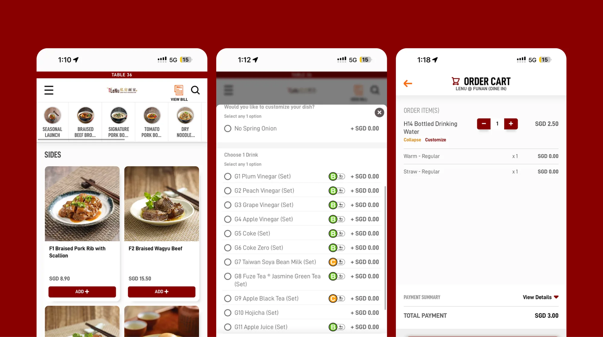
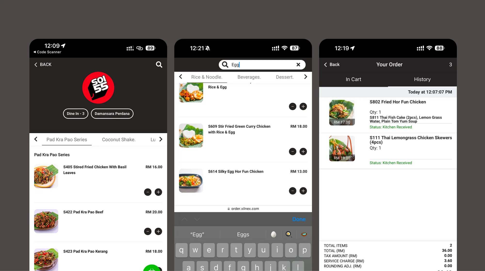
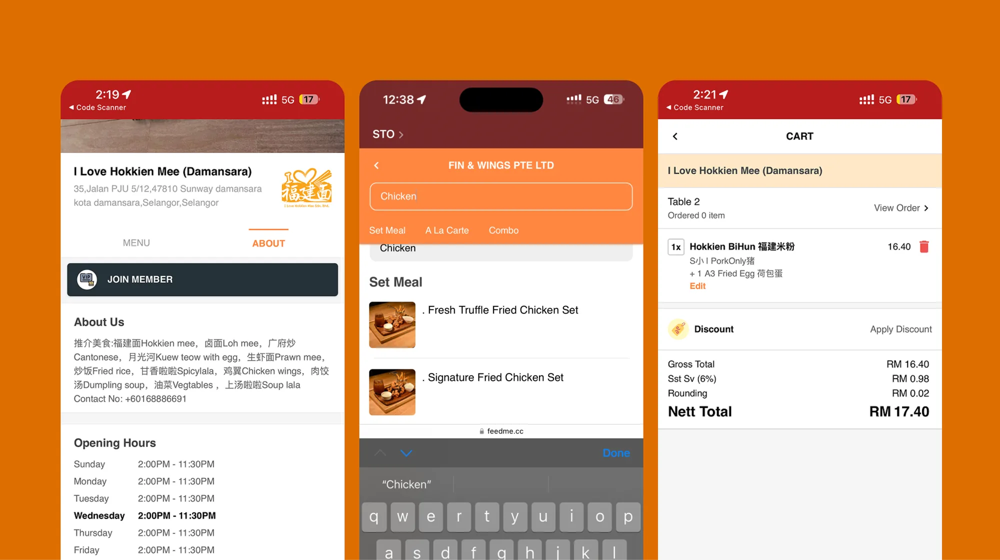
Matching any one of them wasn't enough. To stand out, 2.0 had to be worth something to merchants as well as diners, and that's where Grab had an unfair advantage: its ecosystem data, its loyalty programme, and its POS partners.
Nobody orders alone, even when they're alone
We went into restaurants to watch how people actually order. Cafés, buffets, families, friends and solo diners all ordered differently, and almost none of them matched the one-phone, one-person flow of 1.0.2Why groups56% of orders in STO 2.0 have more than one diner. Designing for a single person at a time meant designing for the minority case.
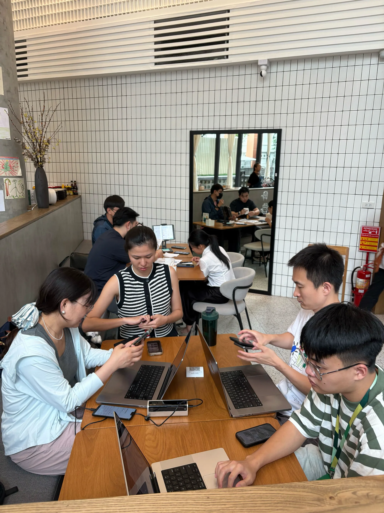
One coordinator goes round the table collecting everyone's order.
Confusion over how to split the bill, and what to order for the table.
No sense of portion sizes. Everyone, alone or not, stalled on what to order.
Merchant-first, and less work for the table
How might werebuild STO into a merchant-first, data-driven product that reduces friction for diners and grows average order value through personalisation and ecosystem integration?
We set four differentiators, two for each side of the counter:
AI-driven upsells
Recommendations built on Grab's ecosystem data, to grow order value.
Contextual loyalty
Grab loyalty inside the ordering flow, capturing consent and bringing diners back.
A shared basket
The table plans and edits one order together in real time, instead of one person collecting it.
Personalisation
A menu shaped by your preferences and history.
There was a tension built into that list. Personalisation and loyalty need to know who you are, and the login wall was the single biggest drop-off in 1.0. Identity had to feel like something you get, not a gate you pass through.
We designed a great menu for diners. Merchants didn't want it.
The first test concept combined a personalised menu with a shared basket: easy category navigation, personalised recommendations with social proof, and individual orders and bills inside one basket. We tested it with diners and with merchants.
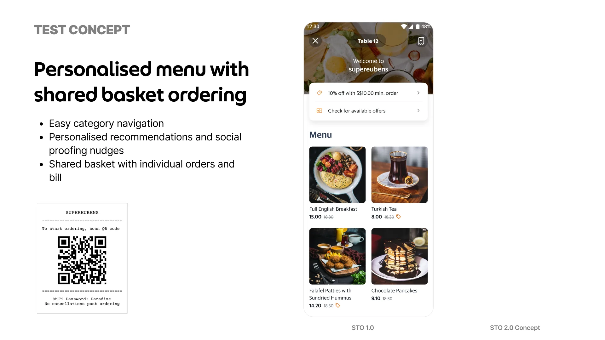
It still feels rather generic. I would want my brand and my promotions to show up very clearly.
Merchant
Recommended items were missed and didn't aid in decision making.
Diner
I can edit some items in the basket while some other items are uneditable.
Diner
The diner feedback was the kind you expect from a first test. The merchant feedback was a warning. In putting the diner first, we'd made every restaurant look the same, and the people who decide whether STO is switched on didn't see themselves in it.3In the deck's words"Design initially over-indexed on the diner's experience, resulting in a generic menu that merchants rejected."
That gave us three tracks to iterate on: stronger branding and promotions, recommendations people actually notice, and a shared basket that's clear about who can change what.
Three tracks, three rounds each
Each track went through a test concept and two more iterations. The rejected versions each got something right, and the shipped one kept it.
Whose menu is it, Grab's or the restaurant's?
A Grab menu with the restaurant's photos
Search up front, a clear way into offers, some brand imagery and colour.
It felt impersonal and generic to diners, and gave merchants nowhere to put their own promotions.
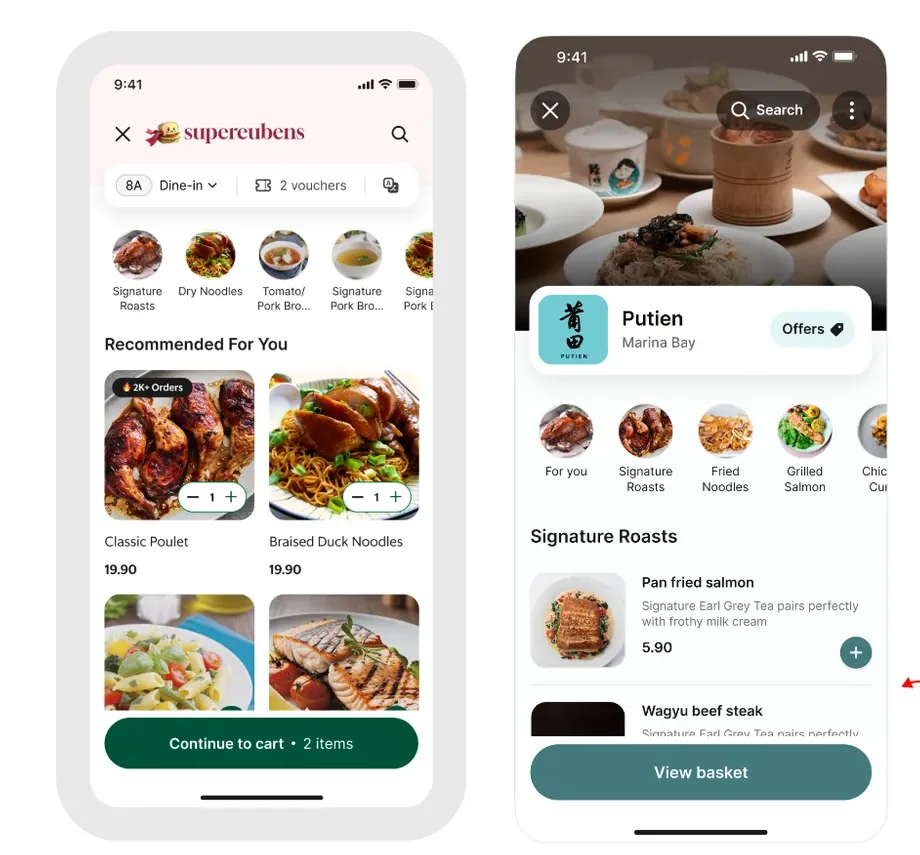
The restaurant, and you
Full-bleed restaurant imagery and a personal welcome: "Hey Zihui, welcome to Putien."
Strong brand, strong personalisation, but the offers and promotions disappeared.
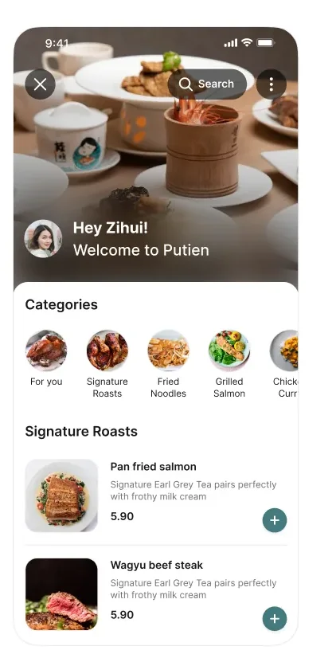
Brand, welcome, and a place for promotions
Brand imagery and personalisation, plus dedicated space for promotional banners and small animations that draw the eye to offers.
Merchants get their brand and their promotions back. Diners still get a menu that knows them.
A branded menu is only as good as what the merchant gives it. We gave up a uniform Grab look in exchange for menus that change with every restaurant.
How loud should recommendations be?
A section with hero images
A personalised "Recommended for you" section that clearly broke from the rest of the menu.
Most recommendations sat behind a horizontal scroll, and diners missed them.
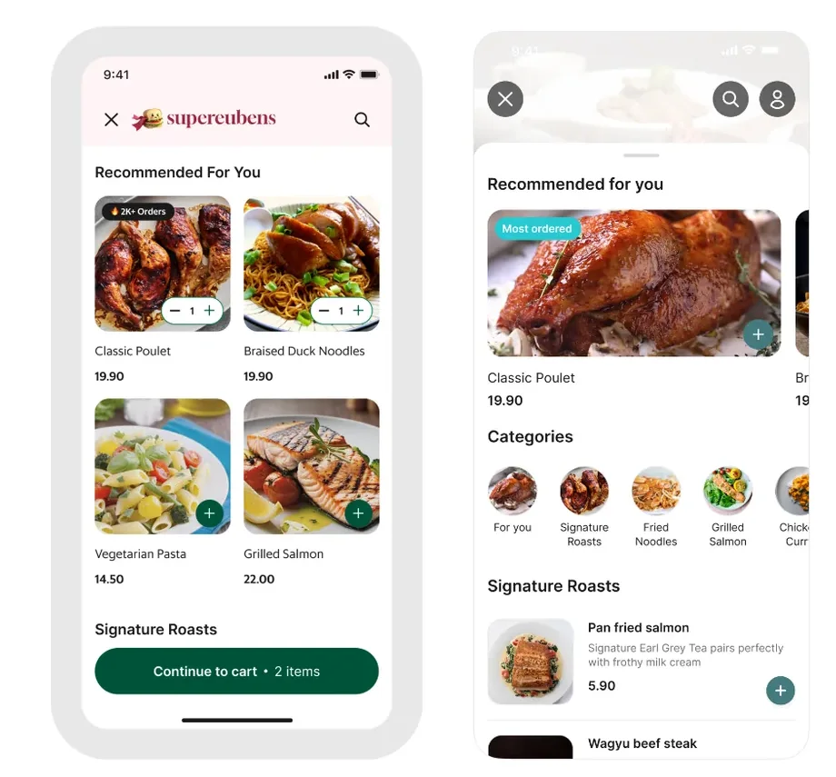
Up to six, all visible
A dedicated section showing up to six items at once.
It took so much vertical space that it buried the rest of the menu and its categories.
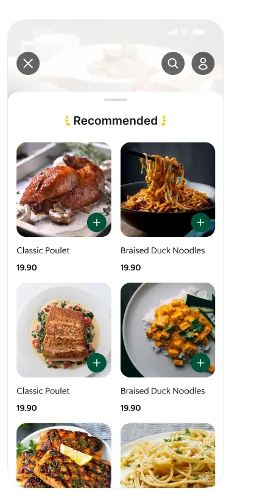
Distinct, but sized to the menu
A visually distinct section of reasonable height with a clear "Add to cart", and short selling points called out across the menu.
Recommendations are where order value grows, but the menu is why people opened the page.
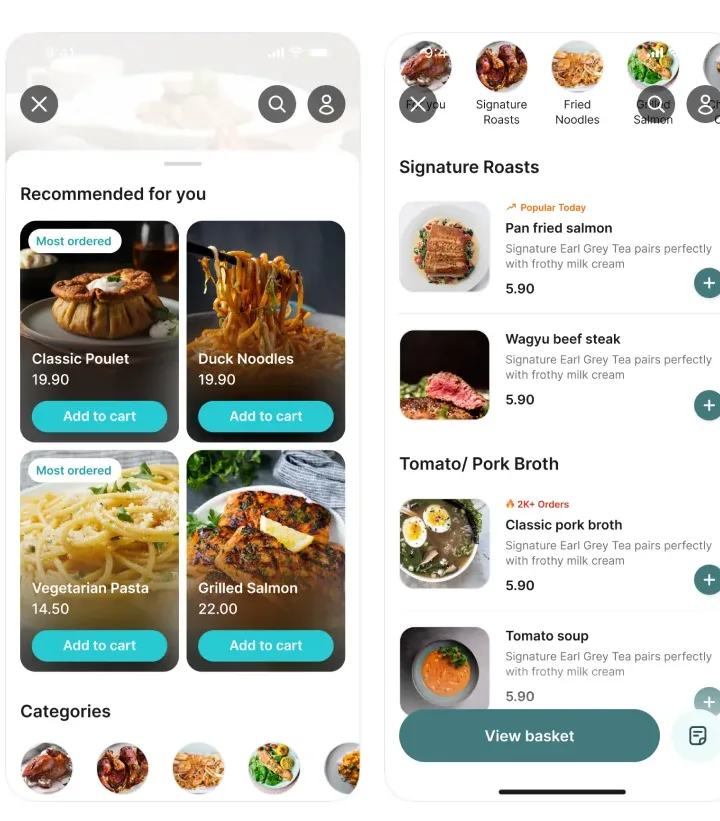
Fewer recommendations in view than iteration 2, in exchange for keeping the full menu one scroll away.
One basket for the table, or one per person?
Your items, then everyone else's
Each order tied to the person who placed it, so you could always find yours.
The same dish appeared in two sections, and some items couldn't be edited, which felt arbitrary.
One list, everyone edits
All orders combined into a single list that anyone at the table could change.
Nobody could tell who had added what, which matters the moment the bill arrives.
One list, with names on it
Combined, editable by everyone, and every item marked with who added it.
The table works on one order, and each person can still find their part of it.
Letting anyone edit anything depends on trust at the table. It's ideal for families and close friends, and testing showed it's less comfortable for looser groups.
Fewer steps between the QR code and the food
Scanning now lands diners directly on the menu, with items in view, which cuts the time to the first tap. The basket and bill carry the table's shared context the whole way through.
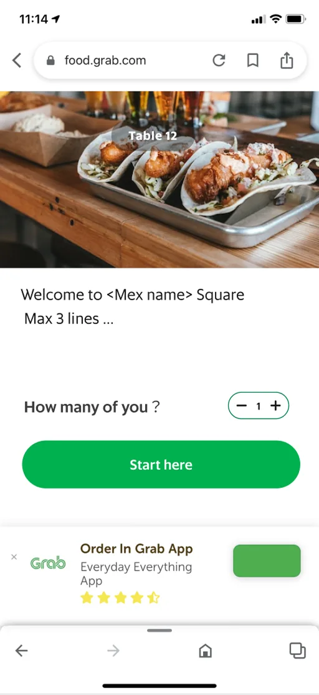

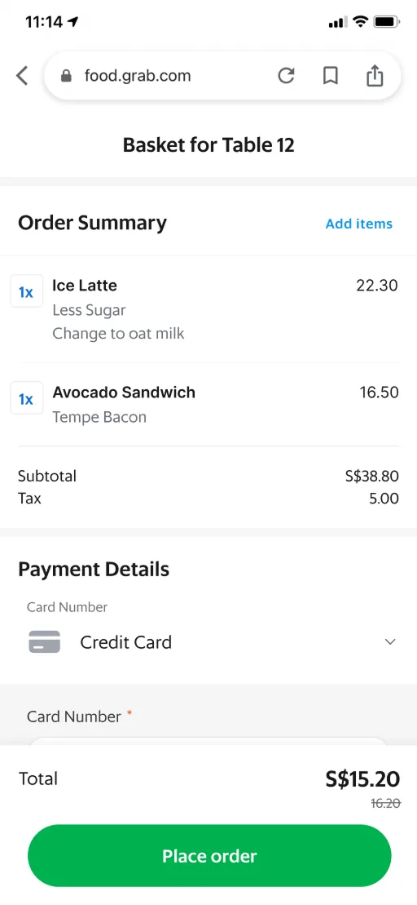
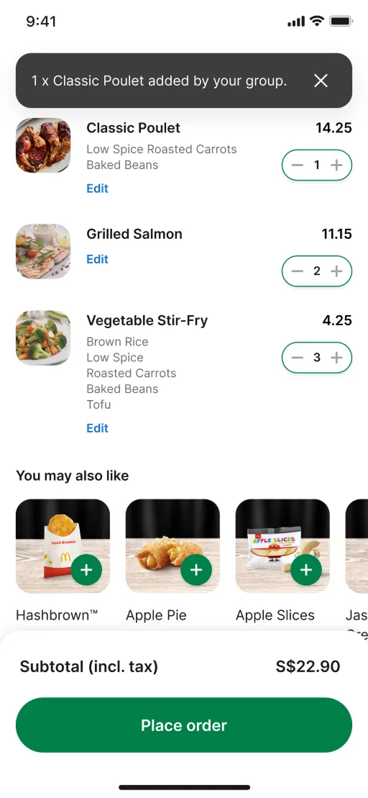
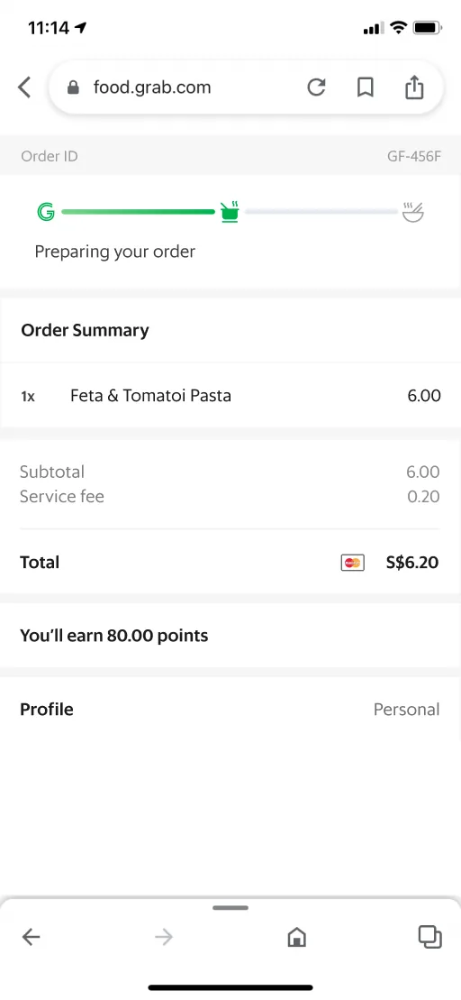
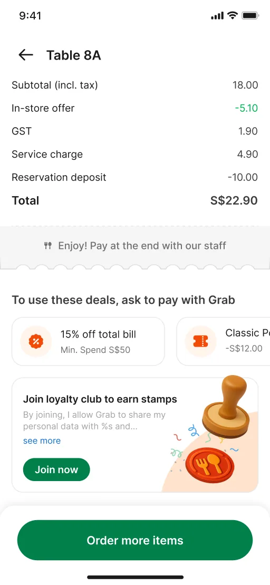
A shared basket only makes sense with more than one person
We ran in-person usability tests and interviews with 12 participants. A shared basket is hard to test with a clickable prototype and one phone, so we built a scrappy backend that simulated several people adding to the same basket in real time.
You're at table A12 with three friends.
Add a dish, or let someone else at the table add one. This is roughly what the vibe-coded MVP did during testing: real-time updates, with a notification each time the basket changes.
Smooth and intuitive, with no major issues. People moved through it quickly.
People liked seeing everyone's items and changing them in real time. It worked best for families and close friends.
People wanted to know who ordered what, so there's no confusion about who owes what.
Unclear. People didn't know when they were supposed to pay, or who should pay how much.
Faster for the table, worth switching on for the restaurant
Early rollout data and pilot feedback:4Read with careThese are early numbers from rollout and pilots, not a full-market result. I'd want a few more months of data before calling them settled.
- Time to order
- −33% For all diners, from scan to order placed.
- Order completion
- 89% Orders started that were completed.
- Order coverage
- +25pp Per merchant.
- POS adoption
- 60% Average merchant adoption per POS partner.
What I'd keep, and what I'd change
There are two sides to every table.
A marketplace product has two customers, and the one who installs it isn't the one who uses it. Our first concept was a good diner experience that merchants didn't want. Next time, merchant feedback goes in the first round, not the second.
The menu is a data product.
STO 2.0 wasn't only about fixing friction. It was about what data can do in a restaurant: POS intelligence, Grab's ecosystem and what diners like, combined so every meal is a little smarter for both sides.
Test sooner. We spent a lot of time designing and debating shared-basket explorations that a scrappy multi-user prototype could have settled. When we finally built one, it answered questions the debate hadn't, and it surfaced the next problem: payment. Who pays, when, and how much is where I'd go next.